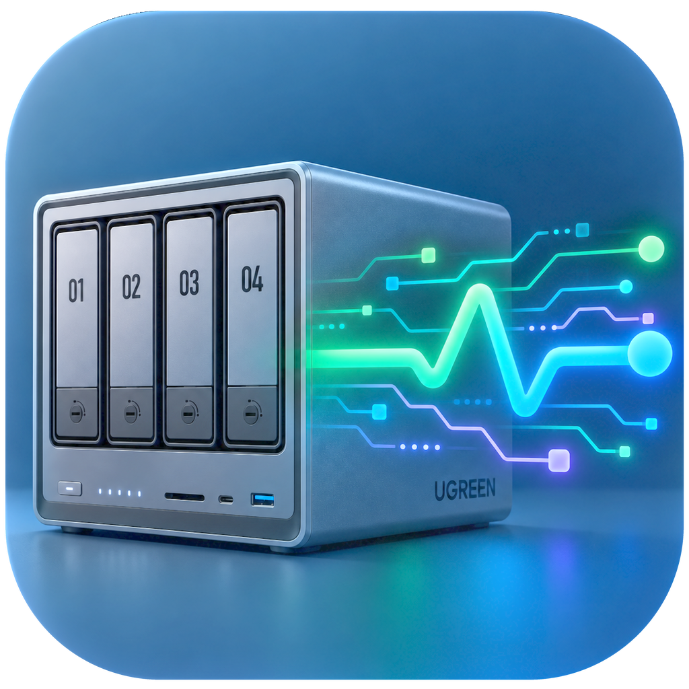

UGREEN Telemetry
Configure which NAS readings to publish to your MQTT broker. The NAS administrator account stays on the NAS.
Local previewToken verified

Configure which NAS readings to publish to your MQTT broker. The NAS administrator account stays on the NAS.